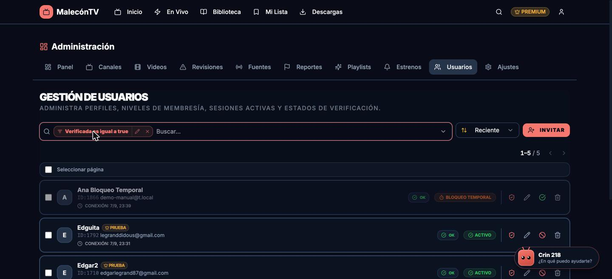
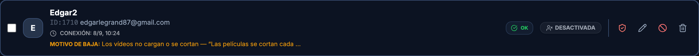
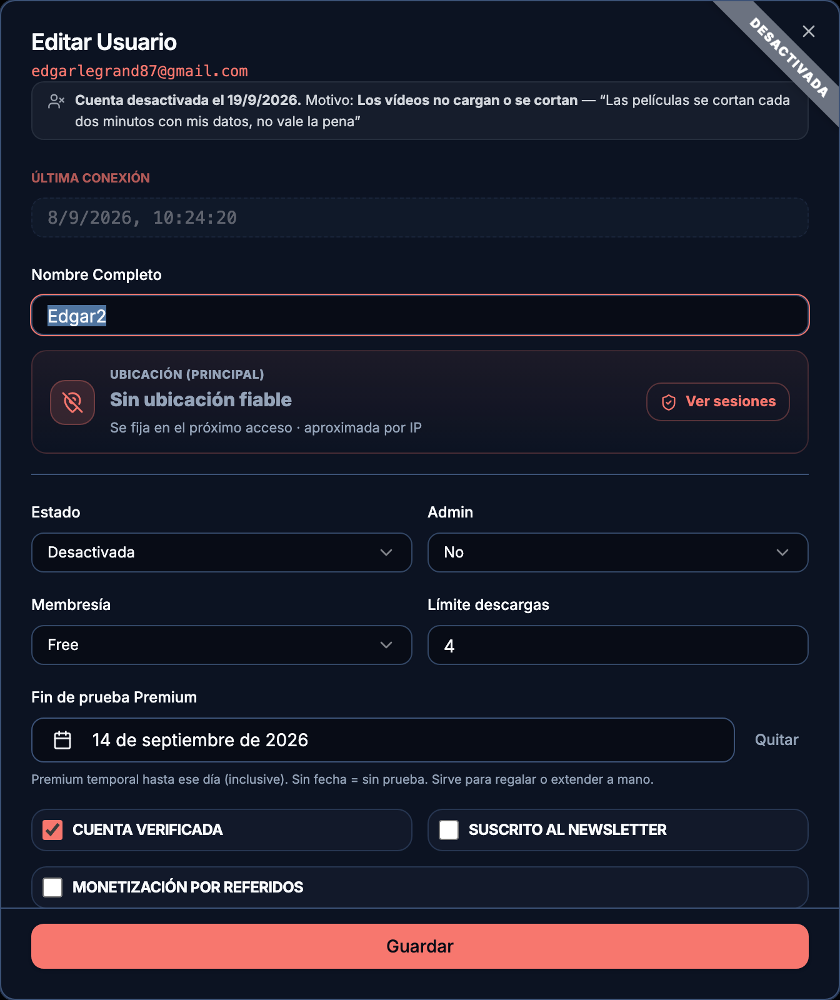
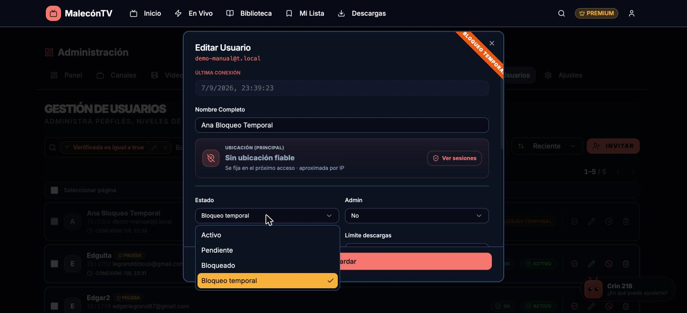
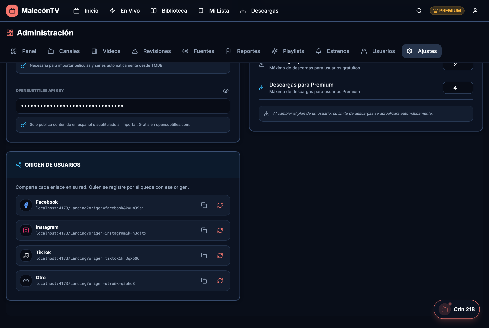

Usuarios
En Admin › Usuarios gestionas las cuentas: rol (admin/usuario), estado (activo, pendiente, bloqueado, bloqueo temporal, desactivado), membresía (free/premium), límite de descargas, verificación, y notas.
Buscar y editar
- Buscador del panel (el mismo de todas las páginas admin: filtrar, agrupar y favoritos — ver El buscador). Por defecto muestra los usuarios Activos; quita el chip “Activos” para ver también pendientes, bloqueados, en bloqueo temporal y desactivados.
- Ordenar por Reciente, Nombre A-Z, Puntos, Referidos, Última conexión o ID.
- Editar en masa — selecciona varios y cambia a la vez rol, estado, membresía, origen o el Fin de prueba Premium (con calendario; dejarlo vacío quita la prueba a todos los seleccionados).
- La ficha de cada usuario reúne sus datos, su origen, quién lo refirió y sus referidos. Incluye el campo Fin de prueba Premium: Premium temporal hasta ese día (inclusive) — sirve para regalar o extender la prueba a mano; el botón Quitar la elimina.
- Prueba Premium en la lista: los usuarios en prueba llevan el badge “Prueba” (con su fecha al pasar el ratón). En el buscador puedes filtrar por Prueba Premium (En prueba / Expirada / Sin prueba), por fecha de Fin de prueba (antes/después de), y agrupar por estado de prueba.
Estados de una cuenta

En la ficha (Editar), el desplegable Estado tiene:
- Activo — funciona con normalidad.
- Pendiente — registrada pero sin verificar el email.
- Bloqueado — bloqueo permanente que pones tú a mano; la cuenta no entra hasta que la reactives. Úsalo para vetar una cuenta.
- Bloqueo temporal — bloqueo automático de 15 minutos tras 5 intentos de login con contraseña fallida (anti-fuerza bruta). No se pone a mano: aparece solo. Al entrar, el usuario ve un aviso claro con los minutos que faltan.
- Desactivada — la dio de baja el propio usuario desde su perfil (se borra sola a los 60 días). Al darse de baja se le pide un motivo (no encontró lo que buscaba / los vídeos no cargan o se cortan / gasta muchos datos / no lo va a usar / otro) y, si quiere, una nota. En la lista sale en una línea bajo el nombre (“Motivo de baja: …”, recortada) y en la ficha, completa: ribbon “Desactivada” en la esquina y un aviso con la fecha, el motivo y la nota. Es solo lectura. Al reactivar la cuenta el motivo se borra.


El bloqueo temporal se cura solo: cuando pasan los 15 minutos, la cuenta vuelve a Activo automáticamente (el panel lo refleja sin que hagas nada). Si quieres desbloquear antes, abre la ficha y cambia el Estado a Activo (no hay botón aparte; poner “Activo” limpia el bloqueo). En la lista lleva un badge naranja “Bloqueo temporal” y puedes filtrar por ese estado en el buscador.

Ubicación de usuarios (mapa)
En el Panel (Admin › Panel), dentro de Comunidad y Crecimiento, hay un mapa “Ubicación de usuarios” que te dice de dónde es tu audiencia, deducido de la IP de sus accesos.
- Mapa mundial con una burbuja por país; el número dentro es cuántos usuarios hay allí. Puedes acercar/alejar y arrastrar, o clicar un país del Top 5 para volar hasta él.
- País / Región — el interruptor de arriba a la izquierda cambia entre burbujas por país o por región.
- Top 5 países a la derecha, con su porcentaje.
- Usuarios activos ahora (indicador verde) — cuántos usuarios (no admins) han tenido actividad en los últimos minutos. Se actualiza solo mientras miras el panel.
- N geolocalizados · N países — el total de usuarios con ubicación conocida.
Ubicación en la ficha y en las sesiones
- En la ficha de cada usuario (Editar), debajo del nombre, aparece su ubicación principal (país · región).
- En “Sesiones activas” de cada usuario, cada acceso muestra su país y, si viene por VPN o Apple Private Relay, se marca como
· VPN. - En el buscador de Usuarios puedes filtrar y Agrupar por País y Región (igual que por Membresía o Estado — ver El buscador).
¿Es fiable? ¿Cada cuánto se actualiza?
- País: muy fiable (~99%). Región: orientativa. La ciudad no se muestra porque por IP no es fiable (en móvil suele salir el nodo de la operadora, no el usuario).
- Se excluyen VPN y Apple Private Relay (ubicación no fiable) y no cuentan los admins en “activos ahora”.
- La ubicación de cada usuario se recalcula en cada acceso desde una IP fiable, así que refleja su último acceso bueno. La base IP→lugar es offline (no hace llamadas externas) y respeta la privacidad; úsala en agregado (mapa/conteos), no como dirección exacta.
Origen de usuarios (de dónde vienen)
¿Quieres saber si tus registros vienen de Facebook, de TikTok o de la web directa? En Ajustes › Sistema & Integraciones hay una tarjeta “Origen de usuarios” con un enlace por canal: Facebook, Instagram, TikTok, Otro. Cada enlace lleva ?origen=<canal>&k=<token>.

- Comparte cada enlace en su red. Quien se registre entrando por él queda marcado con ese Origen.
- El origen se ve en la ficha del usuario (junto a “Referido por”), y en la lista puedes filtrar por origen y editar en masa el de varios usuarios a la vez.
- Si alguien se registra sin enlace (entró directo a malecontv.es), su origen es Web. Ese es el caso normal y no necesita enlace propio.
- Cada red tiene además un enlace corto para publicar sin que se vea el
?origen=…&k=…:malecontv.es/f(Facebook),/i(Instagram),/t(TikTok) y/o(otro sitio) llevan a la portada;malecontv.es/f/196abre la ficha del vídeo 196 ymalecontv.es/f/c/12la del canal 12. El servidor añade el origen y el token por dentro. La tarjeta muestra el corto y el largo. - En Admin › Vídeos y Admin › Canales, el botón “Publicar en redes” (icono de compartir en la fila y junto al título de la ficha) abre un asistente con el enlace corto de cada red y un texto sugerido para la publicación, con Copiar en cada uno. Nadie escribe enlaces a mano.
- Si alguien llega desde Facebook, Instagram o TikTok sin enlace de campaña (por ejemplo desde un compartido), el navegador lo delata y el registro queda como “Facebook (detectado)” (y equivalentes). Es distinto del origen firmado porque el referrer se puede falsear; el token no.
- Copiar (icono de copiar) → “Enlace copiado”. Regenerar (icono circular) rota el token de ese canal e invalida el enlace anterior → “Enlace generado”.
- El enlace usa la URL donde estás (en local
localhost:4173, en producción tu dominio real). Así nunca copias por error un enlace que apunta al sitio equivocado.
El token (&k=...) evita que alguien se invente un origen a mano. Si el token no coincide con el del canal, el registro cae a Web en vez de atribuirse a una red falsa.
Referidos e invitaciones
- Referidos — un usuario invita con su
?ref=CÓDIGO; al registrarse alguien por él, se le atribuye. Solo cuenta si el código pertenece a un usuario real (si no, no crea “referido fantasma”). El listado vive en Admin › Referidos (oculto del nav, se abre desde el Panel o la ficha de usuario). - Invitar por email — en Admin › Usuarios, “Invitar” envía un correo (diseño newsletter) con enlace de registro. Si el email ya existe, avisa y no envía.
Borrar un usuario
El botón “Eliminar” anonimiza las referencias de auditoría (reportes, enlaces rotos) poniéndolas a NULL —para conservar el historial operativo— y luego borra la cuenta. El resto de datos personales (favoritos, historial, sesiones) se borra en cascada. Ver Fallos comunes si el borrado da error.